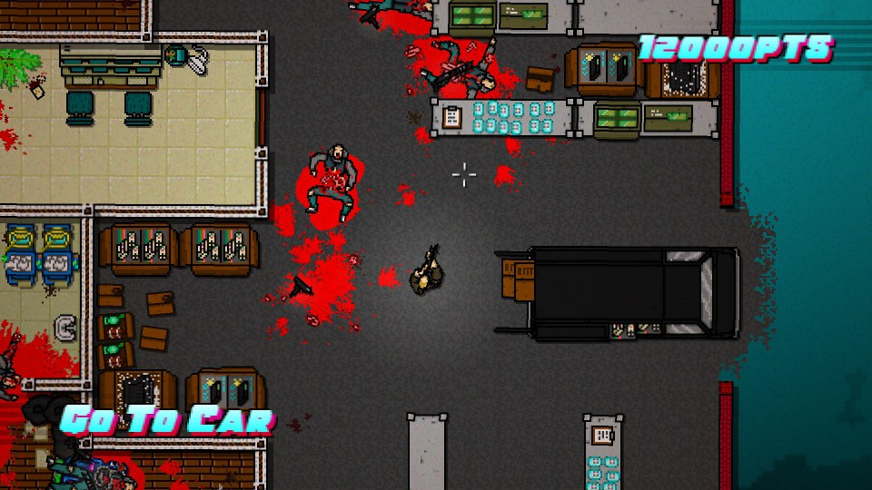
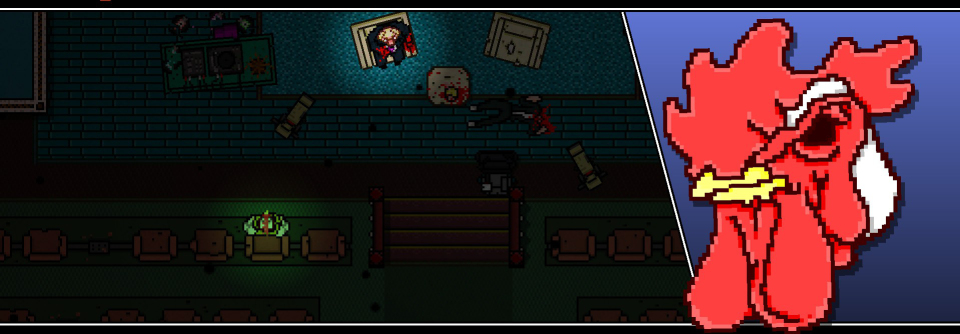

Développeur: Dennaton
Éditeur: Devolver Digital
Sortie: 15 Mars 2015
Genre: Pixel Killer
Multi: Non
Support(s):
Attendu comme le messie depuis presque un an -date de la sortie de son trailer fracassant- Hotline Miami 2 : Wrong Number se veut suite et fin d’un trip sous psychotropes maculé d’hémoglobine. Ce second épisode remplit-il son rôle tout en en profitant pour étoffer sa recette et corriger les écueils de son grand frère ? Pour avoir la réponse, je vous propose un voyage dans le temps, via planète Miami.
Lors de sa sortie en 2012, Hotline Miami premier du nom avait connu une sortie discrète ébruitée de-ci de-là par les rumeurs de violence outrancière et gratuite qui semblait le caractériser. La recette du titre, savant mélange de couleurs psychédéliques calées sur unebande-son entêtante, couplées à un gameplay frénétique intransigeant n’avaient pas tardé à l’ériger en monument du jeu indé. Le protagoniste Jacket, recevait des coups de fil cryptiques lui intimant d’aller décimer la population mafieuse terrée dans les immeubles de la ville de tous les vices. Sans même réfléchir à la finalité de la chose, Jacket -et donc, nous- s’engouffrait dans sa voiture. Arrivé au point de rendez-vous, il enfilait alors un masque animalier – chacun ayant ses propres caractéristiques- et massacrait sans aucune forme de procès les Russes surarmés présents sur les lieux. Chaque niveau prenait alors la forme d’une transe meurtrière déclenchée et accentué par les couleurs à convertir à l’épilepsie n’importe qui ainsi que par la vilaine musique vintage.
C’était ça Hotline Miami. Une vingtaine de niveaux rythmés par la violence comme autant de prises d’acides. Devenus dépendants, les joueurs les plus acharnés ont jeté leur dévolu sur Wrong Number. Tout comme votre serviteur, hypé sans commune mesure uniquement par le trailer paru l’an passé. Dès le lancement du jeu, aucun dépaysement. Les menus sont quasiment identiques et les petits changements visuels que l’on peut noter concernent l’abandon de l’iconographie « téléphone » pour celle des cassettes VHS. On commence par une brève scène « tutorial » où les bases nous sont inculquées et on en profite pour lancer un